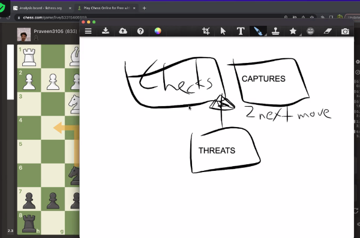

Chess & Dating
Pattern recognition: most of the guys I've dated are into chess, and some are exceptionally good at it. I find myself attractive to qualities such as intellectual curiosity, patience, analytical thinking, and resilience, and I notice that boys who are committed to chess share these qualities.
Why did I become interested in playing chess? For the thrill of winning! 有强烈的好胜心 - I have a strong desire to win! Playing chess has always highlighted the blind spots in my decision-making process and my lack of planning. As I train myself in this game, I am also developing new habits in my thinking process. For instance, I now make it a point to think things through before I speak. Previously, my unfiltered words have caused unnecessary trouble. Thus, I see the game of chess as an effective way to cultivate calmness.
Dating has always felt like solving a puzzle to me—I enjoy the challenge, much like solving chess puzzles (though dating itself is another story!). Two years ago, I met someone who not only shared my passion for chess but also patiently taught me whenever I showed interest, igniting my own love for the game. Our relationship revolved around chess, which suited me perfectly as I prefer simpler dating ideas over the extravagant ones in New York City. We even attended a tournament together, where I witnessed grandmasters fiercely competing firsthand.
Reflecting on our time together, chess brought us closer, uncovering shared childhood experiences, a mutual curiosity for exploring the world, and academic pursuits. He became emotionally special to me, and I still fondly think of him whenever I play chess. I learned that I deeply connect with people who are eager to teach me new things, help me grow, and improve aspects of myself. As I continue to embrace the journey of learning and self-discovery, my appreciation for him only grows stronger.
One of the most impactful chess lessons he taught me was the importance of considering all possible moves when evaluating a position. He emphasized the need to assess not just immediate attacks or captures but also threats to my opponent's position. By meticulously weighing these options, I am adopting the new way of thinking in not only chess but also in other areas of life.
